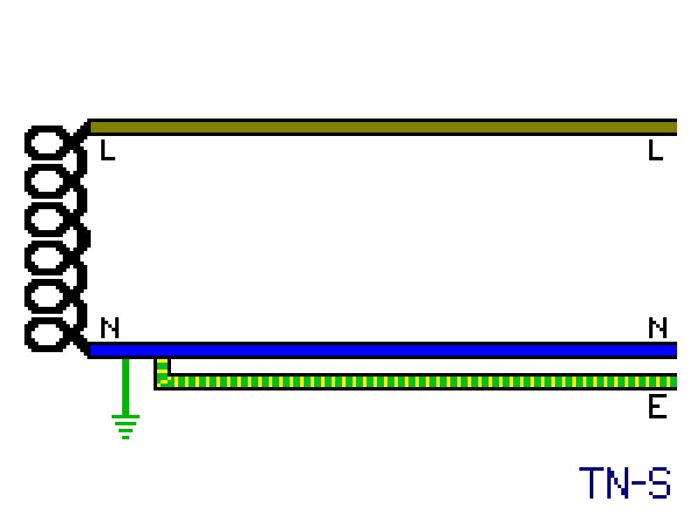
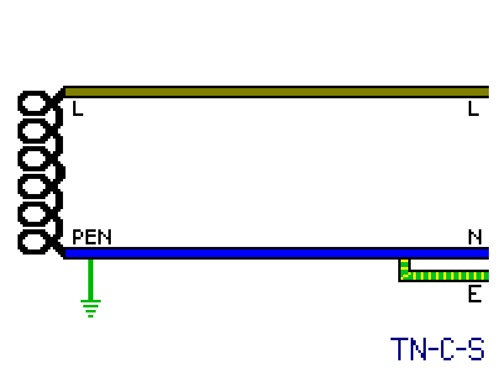
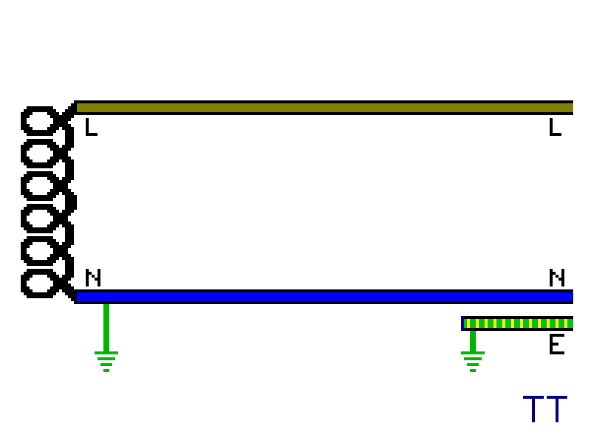
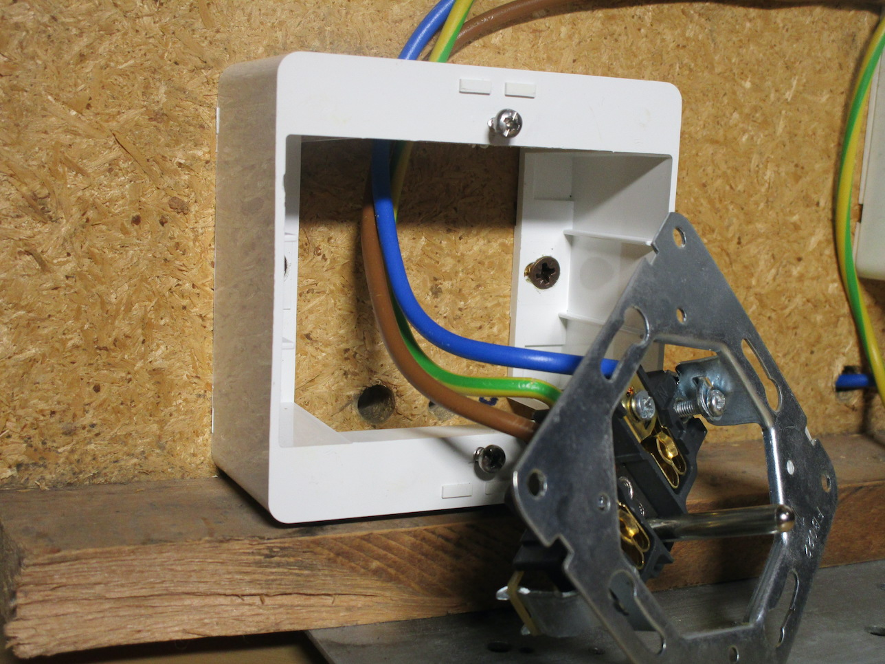
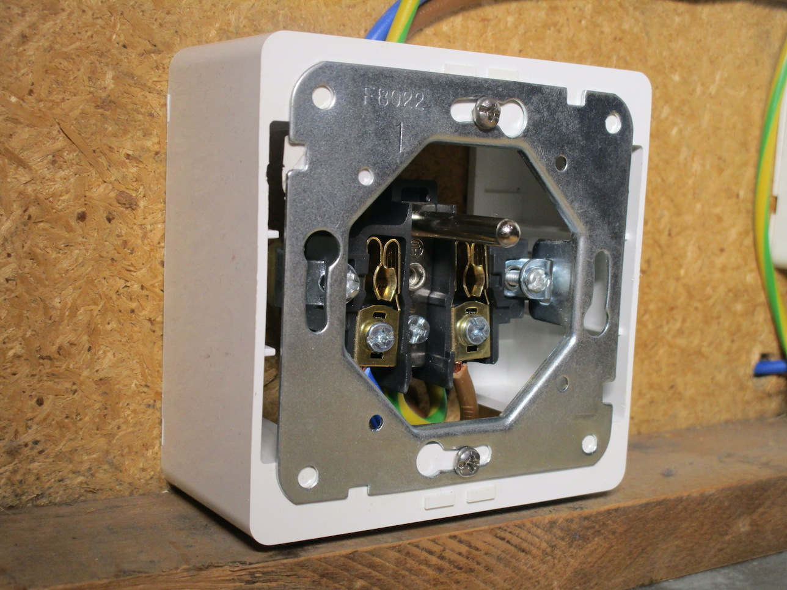
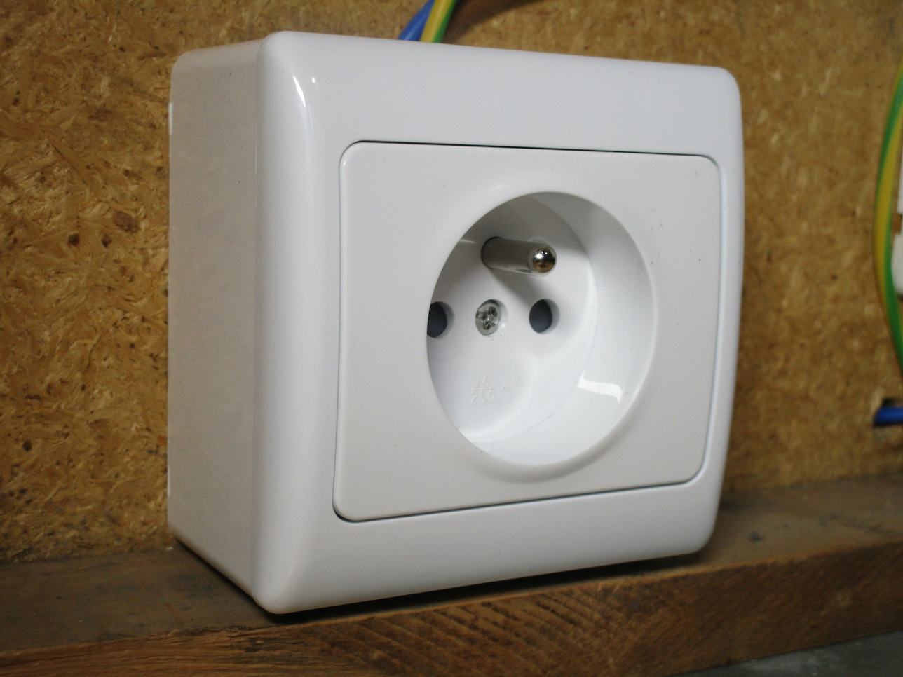
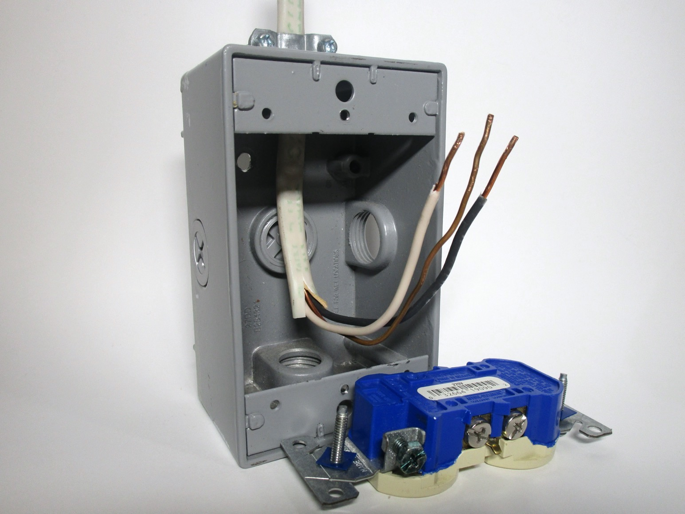
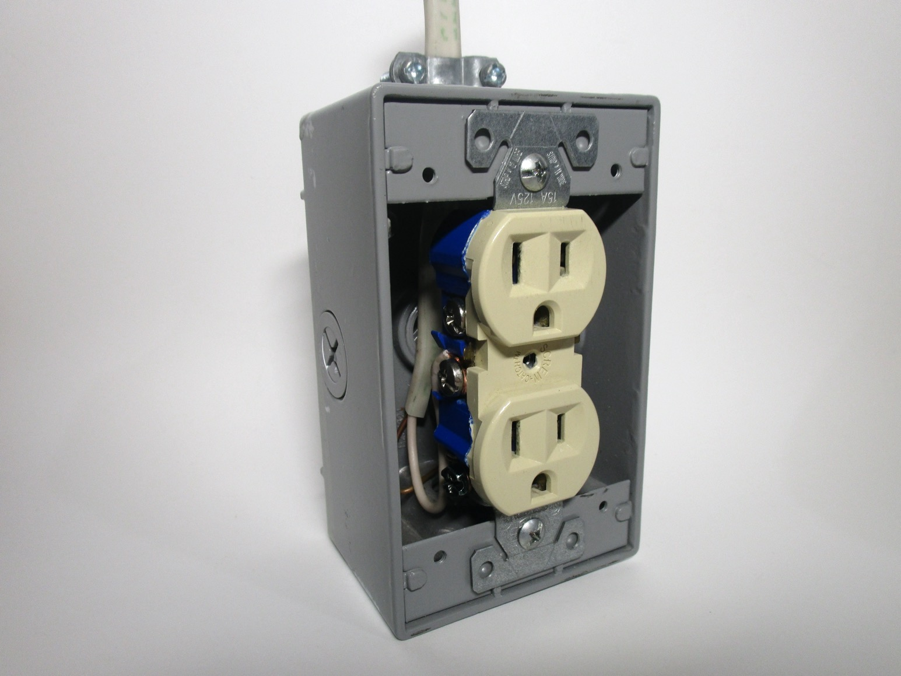
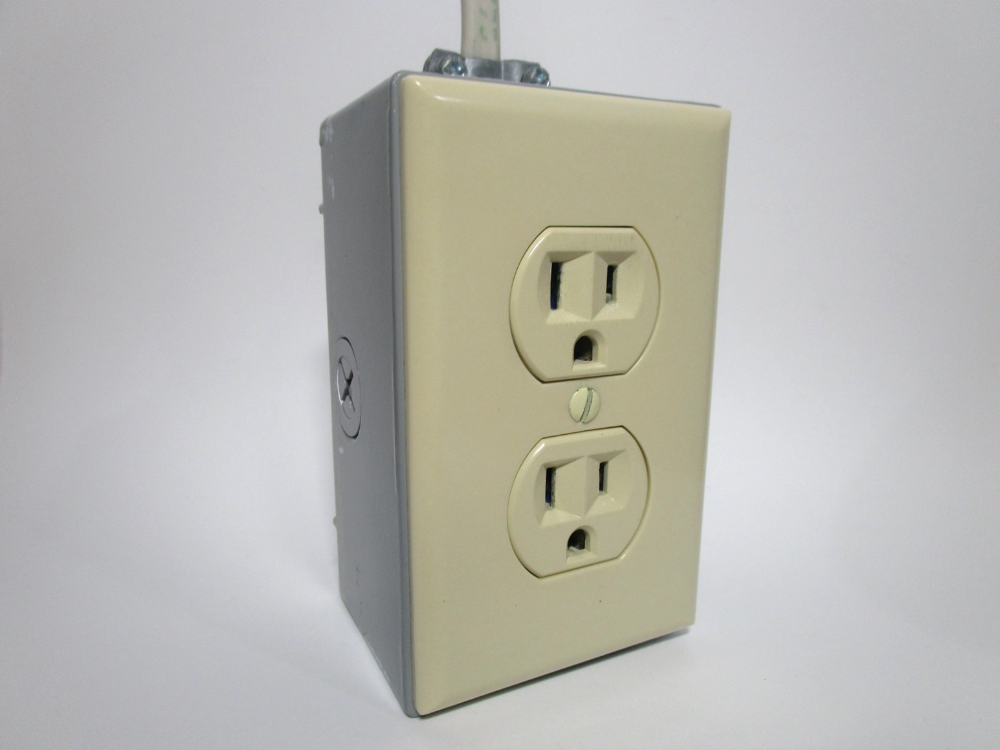

Wiring and power distribution
Wiring practices vary considerably between different countries, even within Europe. This page covers some of these differences, both on how power is distributed to an installation, as well as how wiring is done inside the installation itself.
Earthing systems
As mentioned previously, the protective earth (ground) is a crucial safety feature in an electrical installation, and thus mandatory in most countries around the world. However, the actual way an earthing system works can vary substantially, not just between different nations but even within the same country, with each system having a different set of pros and cons.
Classification of the different types of earthing arrangements is generally done using terminology set by the International Electrotechnical Commission (IEC); these are generally divided into three categories: TN, TT and IT. TN supplies (that is, ones where the neutral is physically connected to the earth conductor at some point) are then subsequently divided into more categories to specify the point at which this connection is made.
Note that in all of these systems, except for the IT one, the central point of the transformer is connected to an earth rod and thus becomes the neutral of the supply. In some countries this is referred to as the "zero" point as the neutral is a approximately 0V with respect to earth. To combat voltage drop, it's also common for it to be earthed at a few other points as well.
  {kind=link}
{kind=link}
{kind=link}
TN-S supplies
In these supplies the earth is provided by the electricity supplier in the form of a separate wire going all the way back to the transformer, where it is connected to the neutral. This system used to be quite common in older houses in the UK, where supply cables had a lead outer covering which was used as the protective earth (PE) conductor.
The disadvantage of this system is the high cost, as an entirely separate wire must be supplied; however, it is also very safe, compared to TN-C and TN-C-S supplies, as there's not much that could go wrong with it.
TN-C supplies
With this style of earthing a combined neutral and earth (PEN) conductor is used, both for the roles of carrying the return current and for the protective earth. In a real installation, this means either having a connection inside the appliance from the neutral to the chassis (this, of course, necessitates a polarised plug) or, more commonly, there will be a connection behind the socket from the neutral to the earth contact (sometimes called a "bootleg ground").
The only advantage of this system is its cheapness: you only need two conductors for a circuit.
However, there is a huge risk present if the combined neutral and earth is broken at any point - what is techically
known as a "PEN fault".
In that case, the neutral will rise up to mains voltage, or close to it, and since that's the same wire being
used for the earth connection, this will cause all metal-cased appliances to also be at a dangerous voltage.

These days, due to this huge safety risk, this system is seldom used, outside of power distribution. However, it was allowed until the 90s in the US for connecting stoves and dryers, using a "3-wire" power outlet (replacements for which are still available), and was common until the 70s in Germany, using the bootleg ground method, where it's sometimes referred to as "classical zeroing".
TN-C-S supplies
In this system the supply is still distributed as TN-C for most of the way, until it enters a building, and as such there's still a combined protective earth and neutral (PEN) wire. However, this is then split off into separate neutral and earth conductors at a certain point - usually in the supplier's cutout, power meter, or (in North America) at the first point of disconnection - which then never recombine.
The PEN is also generally earthed at multiple points, to reduce the danger of it potentially suffering from a broken or loose connection. The exact way in which this is done varies between countries, though this is often done by using earthing rods at regular intervals along the length of the supply wires. It's also common for most places (aside from the UK) to also have an earth rod as a mandatory feature inside an installation.
This system is quite common in Europe - though it depends on the specific country as the TT one is also widely used - and it's the only type present in North America. Effectively, it helps reduce (though, it can't eliminate completely) the high risk of a broken PEN that TN-C supplies have, by only making use of it for the supply wires, while retaining part of its cost advantage.
TT supplies
On TT supplies, neutral and earth are never physically interconnected - the earth connection is provided purely by a local electrode. This used to be undesirable before the advent of RCDs, as a fault between line and earth wouldn't have a current high enough to immediately trip a fuse or circuit breaker, and would thus present the risk of leaving the faulty appliance energised.
However, thanks to RCDs having become much cheaper, and nowadays being necessary to use for most circuits anyways, regardless of supply type, the TT system has become much more appealing, as they're both safe like TN-S but also cheap like TN-C-S, without suffering the risk of a PEN fault like the latter.
The use of this system is common in Italy, Denmark, France, Japan, alongside other countries; they're especially common in rural installations.
IT (isolated) supplies
In these supplies none of the connections on the transformer are connected to earth at any point. This means that, in normal conditions, it's impossible to get an electric shock by touching just one wire. Because of this safety benefit, these supplies are often used in special situations such as in hospitals, to power critical machinery.
The use of IT supplies is also very common in Norway, generally on a 127/220V transformer. This was traditionally considered safer, however an isolated system has the problem of being nearly impossible to keep isolated when many appliances are connected. This, combined with some devices not powering on at all under an IT system, has lead Norway to slowly migrate to TN-C-S like other European countries.
Standard European wall box
The vast majority of countries in Europe use round boxes, which the device is then fixed to either using screws or (in older houses) using metal tabs present on the device which push onto the sides of the box.
A standard wall box is only capable of holding one Schuko (or French-style) power socket, unless you use a double socket; however, larger boxes are available which allow for installing more than one device. Installing devices in these boxes is fairly simple, with each device being installed the same way as in a standard box and then the appropriate cover plate being fitted on top.
The box shown here is a surface-mount type, made of plastic, and because of this it's square instead of round; however, wall boxes meant to go in the wall are generally actually round.
  {kind=link}
{kind=link}
{kind=link}
Standard North American wall box
The standard wall box type in use in North America is a rectangular box, which devices are fixed to using two screws.
This type of box is capable of holding one device; as most American sockets are duplex receptacles (that is, a single device containing two outlets), this means a standard box can hold up two two power outlets. Of course, larger boxes are available.
In this case, this is a surface-mount box; wires (or conduit) can be fed from any side, or from the back. In the example shown, the wire is coming from the top, and before entering the box is held with a "connector" to prevent it from being pulled out.
  {kind=link}
{kind=link}
{kind=link}